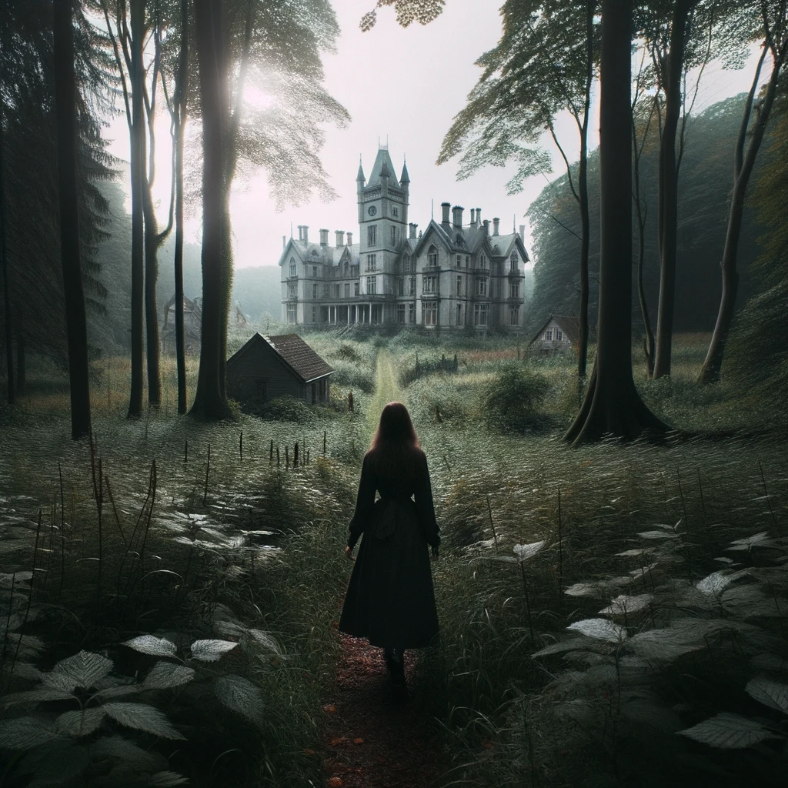
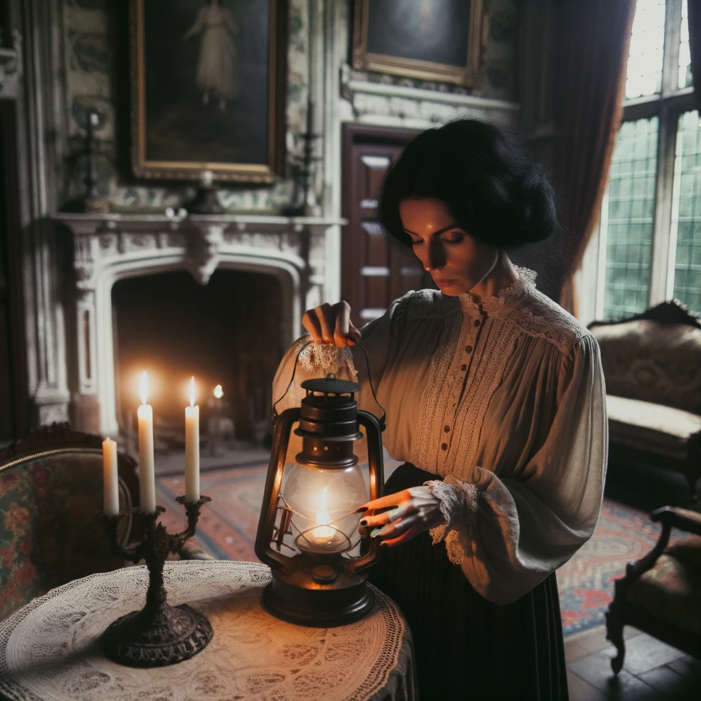
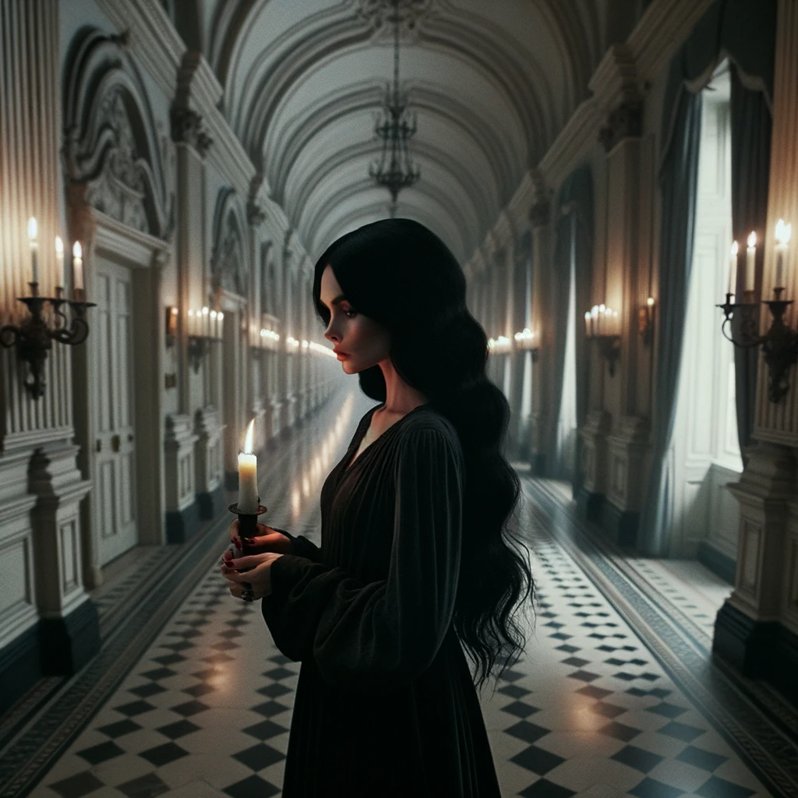
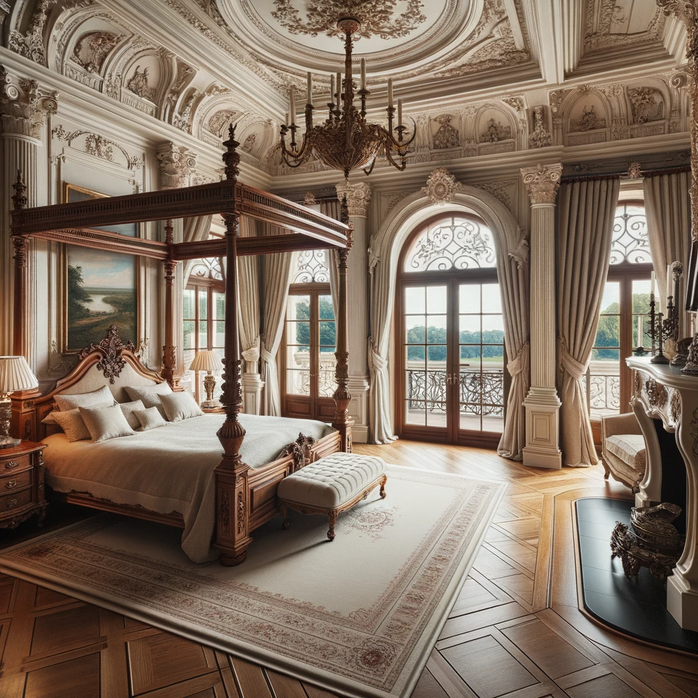

The night was thick with a haunting mist, obscuring the path ahead. The only source of light came from a dim moon, casting eerie shadows on the ground. The tall, ancient trees on either side of the narrow road seemed to whisper secrets as their branches swayed slightly in the cold wind. In the midst of this ominous setting, a figure emerged, walking steadily down the road.
Elara Blackwood, wore a long, tattered cloak that billowed behind her. Her eyes darted around nervously, as if she expected something—or someone—to jump out at her any moment. In her hand, she held a small lantern, its flickering flame providing a tiny circle of illumination around her. The rustling of leaves under her feet was the only sound that accompanied her journey, echoing in the otherwise silent woods. Every so often, she would pause, listening intently for any other sounds. Perhaps she was being followed, or maybe she was just cautious. Whatever her reasons for traversing this unsettling path, it was clear that she was on a mission.
Elara continued her journey, her lantern casting a soft glow on the path ahead. The main road started to fade, giving way to a narrower, more overgrown trail. Fallen leaves rustled under her feet, and the dense canopy above made the surroundings even darker. The air grew colder, and the distant hoot of an owl echoed through the silent woods.
As she ventured deeper, the trees began to thin out, revealing the silhouette of an imposing mansion. Unlike the previous house, this one, while old, seemed to have been preserved by time. Its architecture was grand, with tall windows and intricate carvings. Ivy clung to its stone walls, and a large, ornate iron gate stood before the entrance, slightly ajar as if inviting her in.
Elara paused, taking in the majestic sight. The mansion exuded an aura of both allure and foreboding. She couldn't help but feel that this place held the answers she sought, but also concealed dark secrets within its walls.
With a determined stride, she approached the gate, ready to unveil the mysteries of the secluded mansion.
The door closed behind Elara with a resonant thud, sealing her off from the chilly woods outside. The interior of the mansion was silent, save for the distant ticking of a grandfather clock. The lantern's light flickered, casting dancing shadows on the walls adorned with faded portraits of individuals who might have once resided here.
She navigated the winding corridors, arriving at a grand living room. A large chandelier hung overhead, its crystals coated with layers of dust. On a nearby table, she spotted a candlestick. With a swift motion, she used the lantern's flame to light the candle, filling the room with a warmer, more inviting glow.
Drawn by the rumble of her stomach, Elara made her way to the kitchen. Its design was old-fashioned, with wooden cabinets and a large stone hearth. Pots and pans hung from hooks, and on the counter, she found a loaf of bread, some cheese, and dried fruits. Though aged, they seemed preserved and edible. With swift efficiency, she prepared herself a modest meal, finding solace in the familiar act of eating.
The mansion, though seemingly unfamiliar at first, began to evoke a deep sense of recognition in Elara. As she moved from room to room, fragments of memories started to flood her mind. The grand living room where family gatherings were held, the fireplace where her grandmother used to tell tales of old, and the kitchen where many generations prepared meals – all these spaces held echoes of her lineage.
Elara remembered stories of her ancestors, brave and resilient individuals who had left their mark on the world and this house. The faded portraits on the walls were not just random faces; they were her great-grandparents, aunts, and uncles. With every step, she felt more connected to her roots, realizing that she wasn't just in any house; she was home.
She paused by a particular portrait of a woman who bore a striking resemblance to her – raven-black hair, piercing blue eyes. The nameplate read, "Lilith Blackwood." Whispered tales had always spoken of Lilith as a formidable woman with a mysterious past. Elara felt an inexplicable bond with her, as if their destinies were intertwined.
As she settled into the house, Elara's mission became clear: she was here to uncover the mysteries of her family's past and to reconnect with her ancestral legacy.
The ancestral mansion's vastness was evident as Elara began her ascent up the grand front staircase. Every step she took echoed with a subtle creak, a testament to the history and age of the house. The walls were adorned with tapestries depicting various Blackwood family achievements and milestones, each woven with intricate detail.
Reaching the top, she turned toward the west wing. The hallway stretched out before her, lined with ornate doors on either side, each leading to rooms filled with memories and legacies. The dim light from the setting sun filtered through tall windows, casting elongated shadows on the polished wooden floor.
At the end of the corridor stood a familiar door. Its deep mahogany finish was slightly worn, and a brass nameplate reading "Elara" gleamed softly. With a sense of nostalgia, she pushed the door open to reveal her room. It was just as she remembered: a four-poster bed with deep blue drapes, a writing desk with old letters and trinkets, and a large bay window overlooking the estate's gardens.
This room was a sanctuary, a place where Elara had spent countless hours dreaming, reading, and reflecting on her lineage.
Elara's room was a testament to the Blackwood family's rich history and opulence. Dominating the room was a huge four-poster bed, its dark wooden posts reaching high towards the ceiling, adorned with intricate carvings of vines and leaves. Plush velvet drapes hung from the canopy, their deep blue hue complementing the room's overall palette.
To the side of the bed stood a wooden nightstand, its surface polished to a mirror shine. Upon it rested an antique clock, its pendulum silently swaying, and a few old family photographs in ornate silver frames.
On one wall, a grand fireplace took pride of place, its mantel adorned with various trinkets and heirlooms from generations past. The soft crackling of logs burning added a warm, comforting ambiance to the room.
Opposite the fireplace, a pair of ornate French doors led to a grand balcony. The doors were framed with heavy draperies that could be drawn back to reveal a breathtaking view of the mansion's sprawling grounds. The balcony itself was adorned with wrought-iron railings, and one could imagine Elara standing there, taking in the sights and sounds of her ancestral home.
